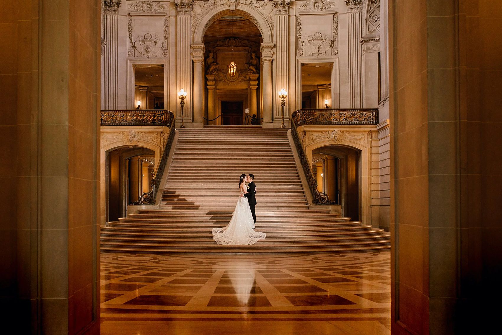
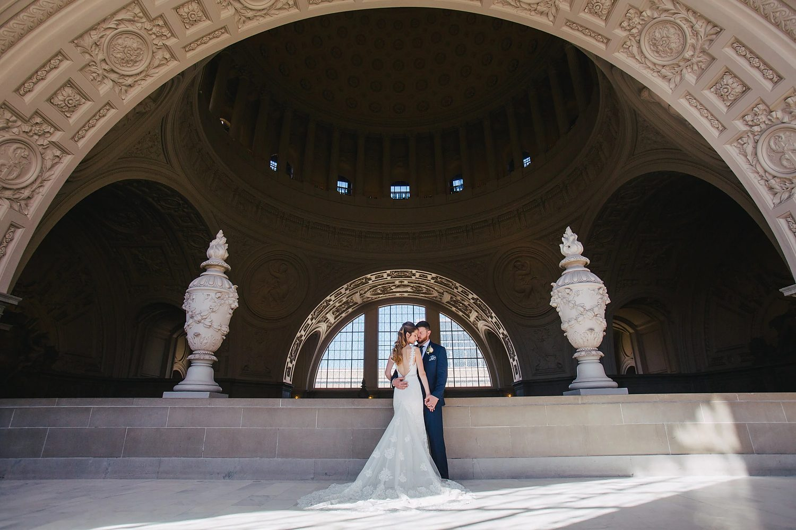
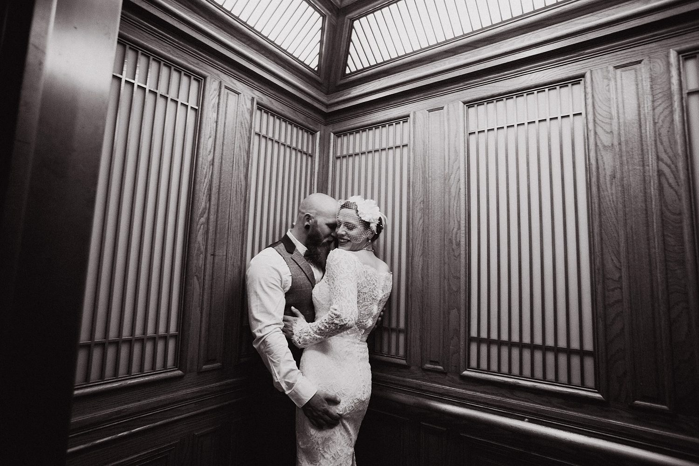
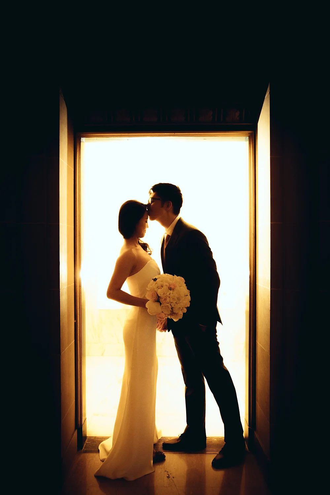
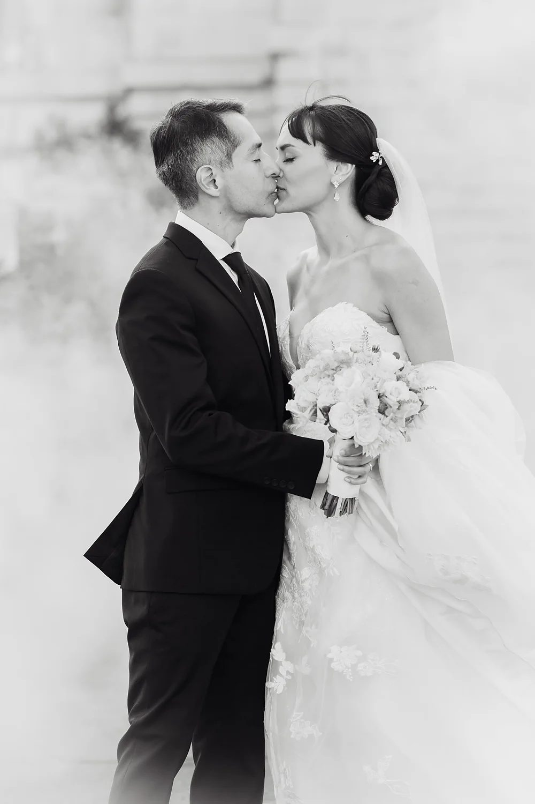
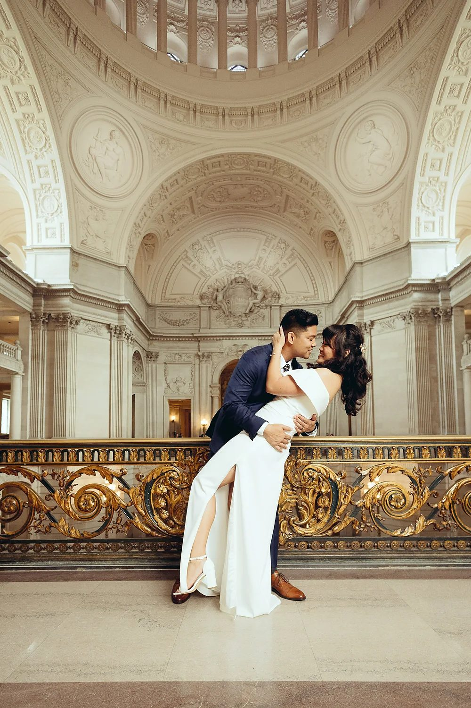
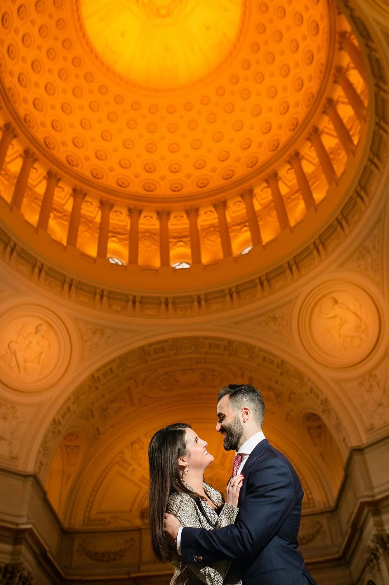
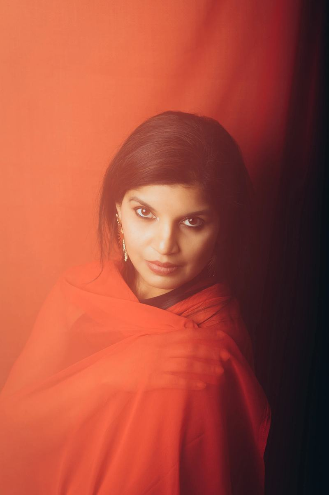

San Francisco City Hall, and almost nothing else. Which means you are not just getting a photographer, you are getting someone who knows the Rotunda, the Grand Staircase and the fourth floor in and out, and who can guide you through the whole process.
Tourists, staff, large weddings and small ones, and countless other photographers, all in the same marble hall at the same time. It can get very crowded. Knowing which areas give you great photographs, and feeling the timing of the place, is the whole job.
That is not something you learn visiting a venue once. It is what you get from photographing the same building, week after week, for years.
"We didn't anticipate how much smoother the whole process was with Boris to help out, tell us what to expect, where to go. He truly is an expert on getting married at City Hall." A City Hall couple



The right package depends on where in the building you are getting married and how many people are with you. If you are not sure, tell me your booking and I will tell you which one fits.
Designed to cover the standard City Hall ceremony in the Rotunda, start to finish.
Ceremony plus proper time in the building afterwards, working the floors while the light is right.
Carry on afterwards to the places that made you choose San Francisco in the first place.
Packages start at $500 · full rates on the pricing page



The same building works just as well for a graduation portrait or a family session, and I shoot studio portraits too. If you already know the hall from your wedding day, coming back for something else is easy.
Weekend weddings and elopements elsewhere in the city are covered as well.

My name is Boris Polissky. I started playing music at nine, played in a few bands, recorded and produced, and always had a camera with me. I ended up helping a friend photograph a wedding, got hooked on the energy of the day, and eventually decided to focus on the one location in San Francisco I had always admired. I took over SF City Hall Photo in 2016.
SF City Hall Photo is not just me. Since 2017 I have worked alongside Alex, who originally taught me a great deal about photography. And I had my own ceremony here with my wife Valerie, so I know exactly how it feels to be on the other side of the camera in this hall.
"We had a small civil ceremony before our larger religious wedding, but still wanted a photographer to capture the ceremony and some group shots with family. All other photographers quoted us upwards of $500, and we were close to giving up, thinking we could use iPhones instead. But Boris came to the rescue. His rotunda package was perfect for us."
A City Hall couple · Google & Yelp reviews
"He truly is an expert on getting married at City Hall. We didn't anticipate how much smoother the whole process was with Boris to help out, tell us what to expect, and where to go."
From the reviews page
"Every time I enter the City Hall and meet my couple, I think how lucky I am to be here. I get paid to be in one of the prettiest places in San Francisco, be part of a special day, spend time with happy people, and capture the moments as they unfold."
Boris, on the blog
"Their officiant only gave them one minute each for vows, but they had written over two minutes. So we carried on after the ceremony. The Christmas tree in the background dates the photos perfectly, and adds light to a normally darker Rotunda."
Sarmaya & Ekin · Rotunda
City Hall runs on a schedule, so the date and the time slot tell me almost everything. Send those over with where you have booked, and I will come straight back with availability and the right package.
Date, time and where you booked. That is all I need to start.
I'll check that date and time and come back to you with availability and the package that fits.
Talk soon. — Boris